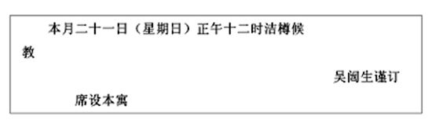

“哪，城墙已经望见了。”刘迪德君说。
一看他所指点的那一面，的确，睽别五年，眷念的北京城的城墙，扑上自己的两眼里来了。
在这五年之间，我看了马德里的山都，看了威丹的新战场，看了美丽的巴黎的凯旋门后的夕阳的西坠。但是，和那些兴趣不同的眷念，现在却充满了自己的心胸。
我们坐着的火车，是出奉天后三十小时中，尽走尽走，走穿了没有水也没有树的黄土的荒野；从北京的刘村左近起，这才渐渐的减了速度，走近这大都会去的。行旅的人，当终结了长路的行程，走近他那目的地的大都会时，很感到不寻常的得意。这都会似乎等候着我的豫感，将要打开那美的秘密的宝库一般的好奇心，——但是，这些话，乃是我们后来添上，作为说明的，至于实际上望见了大都会的屋瓦的瞬间，却并不发生那样满身道理的思想。只是觉得孩子似的高兴，仿佛将到故乡时候一般的漂渺的哀愁。我在美国，暂往乡村去旅行，回到纽约来的时候，也总有这样的感觉。尤其是从伦敦回巴黎之际，更为这一种感觉所陶醉了。大概，凡到一个大都会，最好是在傍晚的点灯时分；白天则太明亮，深夜又过于凄清。天地渐为淡烟所笼罩的黄昏，正是走到大都会的理想时候。但北京并不然。
高的灰色的城墙，现在是越加跑近我们这边来了。澄澈的五月初的阳光，洪水似的在旧都上头泛滥着。交互排列着凸字和凹字一般的城墙的顶，将青空截然分开。那绵延——有二十迈尔——的城墙的四角和中央，站着森严的城楼。而这城墙和城楼之外，则展开着一望无际的旷野。散点着低的黄土筑成的农家屋，就更其增加了城墙的威严。疾走过了高峻的永定门前，通过城墙，火车已经进了北京的外城了。左方便见天坛的雄姿，以压倒一切的威严耸立着。盖着乌黑的瓦的土筑的民家面前，流着浊水，只有落尽了花朵的桃树，正合初夏似的青葱。门前还有几匹白色的鸭，在那里寻食吃。这些光景，只在一眨眼间，眼界便大两样，火车一直线的径逼北京内城东南隅的东便门的脚下，在三丈五尺高的城墙下。向左一回转，便减了速度，悠悠然沿城前进了。
我走近车窗去，更一审视北京的城墙。暴露在五百年的风雨中，到处缺损。灰色的外皮以外，还露出不干净的黄白色的内部；既不及围绕维尔赛的王宫的砖，单是整齐也不如千代田城的城濠的石块。但是，这荒废的城墙在游子的心中所引起的情调上，却有着无可比类的特异的东西。令人觉得称为支那这一个大国的文化和生活和历史的一切，就渗进在这城墙里。环绕着支那街道的那素朴坚实的城墙的模样，就是最为如实地象征着支那的国度的。
北京内城之南，中央的大门是正阳门，左右有奉天来车和汉口来车的两个停车站。我们的火车沿墙而进，终于停在这前门的车站了。
于是坐了汽车，我们从中华门大街向着北走。每见一回，总使人吃惊的，是正阳门的建筑。这是明的成祖从南京迁都于此的时候，特造起几个这样壮丽的楼门，以见大帝国首都的威仪的。但这前门却遭过一回兵燹，现今留存的乃是十几年前的再造的东西。然而仰观于几十尺的石壁之上的楼门的朱和青和金的色调，也还足够想象出明朝全盛时代的荣华。而且那配搭，无论从那一面看来，总觉得美。这也可以推见建造当时的支那人的文化生活的高的水准的。
凡是第一次想看北京的旅行者，必须从这前门的楼上去一瞥往北的全市的光景。从楼的直下向北是中华门大街，尽头就是宫殿。这宫殿，是被许多门环绕着的。进了正面的平安门，才到宫殿的外部。后方的端门的那边，是午门，里面是紫禁城。紫禁城中都铺着石板，那中间高一点的是太和门，其中有太和殿、乾清宫。这太和门前的石灯、石床、石栏之宏大，我以为欧洲无论那一国的王宫都未必比得上。就是维尔赛的宫殿，克伦林的王宫，也到底不及这太和门的满铺石板的广庭的光景的。在五年以前，在这一次，我都从西华门进，看了武英殿的宝物，穿过庭园的树木，走出这太和门前的广庭来。当通过一个门，看见这广庭在脚下展开的时候，无论是谁，总要发一声惊叹。耸立在周围的宫殿和楼，全涂了朱和青，加上金色的文饰；那屋顶，都是帝王之色，黄瓦的。而前面的广庭的周围，都有大理石的柱子和桥为界，前面则满铺着很大的白石。明朝全盛之日，曳着绮罗的美女和伶人，踏了这石庭而入朝的光景，还可以使人推见。而且，那天空的颜色呵，除了北京的灰尘漫天的日子以外，太空总在干透了的空气底下，辉作碧玉色。这和楼门的朱，屋瓦的黄，大理石柱的白，交映得更其动目。自己常常想，能想出那么雄大的构想的明朝的人们，那一定是伟大的人罢。
这紫禁城之后，就是有名的景山。这些门和山的左方的一部，则是所谓三海的区域。南海、中海、北海这三个池子，湛了漫漫的清水，泛着太空和浮云。三个池子中有小岛：南海的小岛上有曾经禁锢过光绪帝的宫殿；中海的小岛上原有太后所住的宫殿，现在做了大总统府了。
围环了这些宫殿，北京全市的民家就密密层层地排比着。从正阳门上一看，即可见黄瓦、青瓦、黛瓦参差相连，终于融合在远山的翠微里。看过雄浑的都市和皇城之后，旅行者就该立在地上，凝视那生息于此的几百万北京人的生活和感情了。这样子，就会感到一见便该谩骂似的支那人的生活之中，却有我们日本人所难于企及的“大”和“深”在。
早上五点半钟前后，忽然醒来了。
许多旅行者，对于初宿在纽约旅馆中的翌朝的感觉，即使经过许多年之后，也还成为难忘的记忆，回想起来。这并不是说在上迫天河的高楼的一室中醒来的好奇心，也不是轰轰地震耳欲聋的下面的吵闹，自然更不是初宿在世界第一都会里的虚荣心。这是在明朗的都市中，只在初醒时可以感到的官能的愉快。外面是明亮的；天空是青的。伸出手来，试一摸床上的白色垫布，很滑溜；干燥的两腕，就在这冷冰冰的布上滑过去。和东京的梅雨天的早上，张开沉重的眼睑，摸着流汗的额上时候，是完全正反对的感觉。这样感觉，旅行者就在北京的旅馆里尝到的。
下了床，在打扫得干干净净的地板上，直走到窗下，我将南窗拉开了。凉风便一齐拥进来。门外是天空脱了底似的晴天。我是住在北京饭店的四层楼上。恰恰两年前，也是五月的初头，夜间从圣舍拔斯丁启行，翌朝六点，到西班牙的首都马德里，寓在列芝旅馆里，即刻打开窗门，眺望外面的时候，也就起了这样的感觉。那时，我犹自叫道：——
“就像到了北京似的！”
这并非因为在有“欧洲的支那”之称的西班牙，所以觉得这样。乃是展开在脚下的马德里的街市，那情调，总很象北京的缘故。而现在，我却在二年后的今日，来到北京，叫着：——
“就像到了马德里似的！”了。马德里和北京，在我，都是心爱的都市。
强烈的日光，正注在覆着新绿的干燥的街市上。——这就是北京。当初夏的风中，驴儿摇着长耳朵，——读者曾经见过驴儿摇着长耳朵走路的光景么？这是非常可笑，而且可爱的——那么，再说驴儿摇着长耳朵，辘辘地拉了支那车——那没有弹机的笨重的支那车——走。挂在颈上的铃铎，丁丁当当响着。驴儿听着那声音，大概是得意的；还偷眼看看两旁的风景。驴儿大概一定是颇有点潇洒的动物罢。在英国话里，一说donkey，也当作钝物的代名词。这与其以为在小觑驴儿，倒不如说是在表白着存着这样意见的英语国民的无趣味。驴儿那边，一定干笑着英、美国人的罢。无论那一国，都有特别的动物，作为这国度的象征的。印度的动物似乎是象；我可不知道。飞律滨的名物不是麻，也不是科科和椰子，我以为是水牛。水牛，西班牙话叫“吉拉包；”倒是声音很好的一个字。这吉拉包就在各处的水田里，遍身污泥，摇着大犄角耕作着。看惯之后，我对于这一见似乎狞恶愚钝的动物，竟感到一种不可遏抑的亲密了。水牛决不是外观似的愚笨的东西，有过这样的事：我所认识美国妇人，曾经将她旅行南美的巴西时候的事情告诉我，“有一回，街的中间，一头水牛在木桩上，眼睛被货物的草遮住了，很窘急。我自己便轻轻走近去，除去了那装着可怕的脸的水牛的眼睛上的障碍物。过了两三天，又在这街上遇见了这水牛。好不奇怪呵，那水牛不是向我这边注视着么？的确，那是记得我的恩惠的。”
且慢，这是和北京毫无关系的话。我的意思。以为飞律滨是吉拉包的国度；在一样的意义上，也以为支那是驴儿的国度。那心情，倘不是在支那从南到北旅行过，目睹那驴儿在山隈水边急走着的情景的人，是领略不到的。
于是又将说话回到北京饭店的窗下去。这响着铃铛的驴儿所走的大街，叫作东长安街，是经过外交团区域以外的大道。这大道和旅馆之间是大空地，满种着洋槐。街的那面的砖墙是环绕外交团区域的护壁；那区域里，有着嫩绿的林。嫩绿中间，时露着洋楼的红砖的屋顶。洋楼和嫩绿尽处，就是那很大的城墙。那高的灰色的城墙的左右，正阳门和崇文门屹然耸立在天空里。那门楼后面，远远地在淡霞的摇曳处，天坛则俨然坐着，象一个镇纸。更远的后面，嫩绿和支那房屋的波纹的那边，埋着似的依稀可见的是永定门的楼顶。
倾耳一听，时时，听到轰轰的声音。正是大炮的声音。现在战争正在开手了。是长辛店的争夺战。北京以南，三十多里的地方，有京汉铁路的长辛店驿。张作霖所率的奉天军，正据了这丘陵，和吴佩孚所率的直隶军战斗。奉直战争的运命，说得大，就是支那南北统一的运命所关的战争，就在那永定门南三十多里的地方交手了。
驴儿和水牛，都从我的脑里消失了。各式各样地想起混沌的现代支那的实相来。但是，对了这平和的古城，欲滴的嫩绿，却是过于矛盾的情状。说有十数万的军队，正在奔马一般驰驱，在相离几十里的那边战斗，是万万想不到的。这是极其悠长的心情的战争。我的心情，仿佛从二十世纪的旅馆中，一跳就回到二千年前的《三国志》里去了。
我的朋友一个美国人，是在飞律滨做官吏的，当了支那政府的顾问，要到北京去了。是大正五年（译者注：一九一七年）的事。临行，寄信给我，说，“到北京去。大约住一年的样子。不来玩玩么？”第二年我一到，他很喜欢。带着各处玩；还说，“并没有什么事情做，还是早点结束，到南美去罢。”两年之后，我从巴黎寄给他信，问道，“还在北京么？”那回信是，“还在。什么时候离开支那，有点不能定。”回到日本之后，我又问他“什么时候到南美去呢？”至于他丝毫没有要往南美那些地方的意思，自己自然是明明知道的。回信道，“不到南美去了，始终在北京。”今年五月我到北京去一看，他依然在大栅栏的住家的大门上，挂着用汉字刻出自己的姓名的白铜牌子，悠然的住在北京。
“唉唉，竟在北京生了根，”他一半给自己解嘲似的，将帽子放在桌上，笑着说。
“摩理孙的到死为止在北京，也就如此的呀。”我也笑着回答。又问道，“那厨子怎么了呢？”
这是因为这么一回事。他初到北京时，依着生在新的美洲的人们照例的癖气，对于古的事物是怀着热烈的仰慕的。他首先就寻觅红漆门的支那房子；于是又以为房门口应该排列着石头凿出的两条龙；又以为屋子里该点灯笼，仆役该戴那清朝的藤笠似的帽子上缀着蓬蓬松松的红毛的东西。后来，那一切，都照了他的理想实现了。于是他雇起支那的厨子来；六千年文化生活的产物的支那食品，也上了他的食膳了。衙门里很闲空。他学支那语；并且用了可笑的讹误的支那语到各处搜古董。莫名其妙的磁器和书箱和宝玉，摆满了他一屋。他是年青而独身的。他只化一角钱的车钱，穿了便服赴夜会去。他是极其幸福的。
但是，无论怎样奢侈，以物价便宜的北京而论，每月的食物的价钱也太贵了。有一天，他就叫了厨子来，要检点月底的帐目。他于是发见了一件事：那帐上的算计，他是每天吃着七十三个鸡蛋的。他诘责那厨子。厨子不动神色的回答道：——
“那么，鸡蛋就少用点罢。”
果然，到第二月，鸡蛋钱减少了；但总数依然和先前一样。他再查帐簿；这回却每天吃着一斤奶油。因为这故事很有趣，所以我每一会见他，总要问问这聪明厨子的安否的。
“那人，”他不禁笑着说，“终于换掉了。”
此后两三天，总请我到他家里去吃夜饭。照例是清朝跟丁式的仆人提着祭礼时候用的灯笼一般的东西，从门口引到屋里去。在那里的已有“支那病”不相上下的诸公六七人。当介绍给一个叫作白克的美国人的时候，我几乎要笑出来。这并非因为“白克”这姓可笑；乃是因为想到了原来这就是白克君。想到了这白克君已经久在支那，以为支那好得不堪；那些事情，就载在前公使芮恩施博士的《驻华外交官故事》里的缘故。
在圆的桃花心木的食桌前坐定，川流不息地献着山海的珍味，谈话就从古董、画、政治这些开头。电灯上罩着支那式的灯罩，淡淡的光洋溢于古物罗列的屋子中。什么无产阶级呀，Proletariat呀那些事，就象不过在什么地方刮风。
我一面陶醉在支那生活的空气中，一面深思着对于外人有着“魅力”的这东西。元人也曾征服支那，而被征服于汉人种的生活美了；满人也征服支那，而被征服于汉人种的生活美了。现在西洋人也一样，嘴里虽然说着Democracy呀，什么什么呀，而却被魅于支那人费六千年而建筑起来的生活的美。一经住过北京，忘不掉那生活的味道。大风时候的万丈的沙尘，每三月一回的督军们的开战游戏，都不能抹去这支那生活的魅力。
在北京的街上走着的时候，我们就完全从时间的观念脱离。这并非仅仅是能否赶上七点半钟夜饭的前约的程度；乃是我们从二十世纪的现代脱离了。眼前目睹着悠久的人文发达的旧迹，生息于六千年的文化的消长中，一面就醒过来，觉得这是人生。十年百年，是不成其为问题的，而况一年二年之小焉者乎。
支那人的镇静，纡缓的心情，于是将外国人的性急征服了。而且，北京的街路，无论走几回，也还是览之不尽的。且勿说四面耸立的楼门的高峻，且勿说遥望中的宫殿的屋顶的绿和黄，即在狭窄的小路中，即在热闹的市街中，也都有无穷的人间味洋溢着。
牵引我们的，第一是北京的颜色。支那的家屋，都是灰色的；是既无生气，也无变化的灰色的浓淡，——无论是屋瓦，是墙垣。但在一切灰色这天然色中，门和柱都涂了大胆的朱红，周围用黑，点缀些紫和青；那右侧，则是金色的门牌上，用黑色肥肥的记着“张寓”之类，却使我们吃惊。正与闲步伦敦街上，看见那煤烟熏染的砖造人家的窗户上，简直挂着大红的窗帘时，有相类的感觉。还有，就在门内的避魔屏，也很惹眼。据说，恶魔是没有眼睛的，一径跳进门来，撞着这屏，便死了。有眼睛的支那的从人，就擎着来客的名片，从这屏的右手引进去。门的两旁又常常列着石狮子等类。
然而，惊人的光景，却是活的人和动物。尤其是从日本似的，人和动物之间并不相亲的国度里来到的人们，总被动心于在支那的大都会中，愉快地和人类平等走着的各种动物的姿态的。
先是骆驼，凡有游览北京的，定要驻足一回，目送这庄严的后影的罢。那骆驼，昂了头，下颚凹陷似的微微向后，整了步调，悠悠然走来的模样，无论如何，总是动物中的贵族。而且无论在怎样杂沓的隘巷里，只有它，是独拔一头地，冷冷然以流盼俯察下界的光景的。那无关心的，超然的态度，几乎镇静到使人生气。人类的焦急，豚犬的喧骚，它一定以为多事的罢。仗着蓬松的褐色毛，安全地凌了冬季的严寒的它，即使立在淅沥的朔风中，也不慌，也不怯，昂昂然耸立着，动物之中，自尊心最强的，一定要算骆驼了。它是柏拉图似的贵族主义者。
那旁边，骑驴的支那人经过了。一个农夫赶了几十只鸭走过去。猪从小路里纷纷跑出。骡车中现出满洲妇人的发饰来。卖东西的支那人石破天惊地大叫。看见一个客，二十个车夫都将车靶塞给他。作为这混杂和不统一的压卷的，是黑帽黄线的支那巡警茫然的站在街道的中心。
吴闿生先生的请柬送到了：——

是印在白的纸上的。
这是前一回，招待他的时候，曾经有过希冀的话，说我愿意在这时候见一见他的有名的小姐，并且得了允可的。
那天，是炎热的日曜日。格外要好，穿了礼服去。在不知道怎样转弯抹角之间，已经到了他的邸宅了。照例是进大门，过二门，到客厅，吴闿生先生已经穿了支那的正服等候着。他是清朝的硕儒吴汝纶先生的儿子，也有人以为是当今第一的学者的。曾经做过教育次长，现在是大总统的秘书官。传着旧学的衣钵，家里设有讲坛，听说及门的弟子很不少。
那小姐的芳纪今年十七，据说已经蔚然成为一家了，所以我切请见一见。吴先生的年纪大约四十五六罢，但脸上还是年青的书生模样。他交给我先前托写的字；又给我小姐亲笔的诗稿，有十二行的格子笺上，满写着小字。虽说是“鹤见先生教正”，但那里是“教正”的事，署名道“中华女史吴劼君”，还规规矩矩打了印章哩。写的是《谦六吉轩诗稿自序》，有很长的议论，曰：——
“诗之为道也，当以声调动人，以其词义见作者之心胸。故太白之诗，豪放满纸，百趣横生，狂士之态可见；杜甫之诗，忠言贯日，志向高远，忧思不忘，故终身不免于困穷。”
中途又有答人以为旧学不适于时世，劝就新学的话：——
“余曰，不然。新旧两学，并立于当今之时，固未易知其轩轾也。余幸生旧学尚未尽灭之时，仰承累世之余泽，而又有好古之心。云云。”（译者注：以上两节是我从日译重译回来的，原文或不如此。）
简直不象是十七岁的姑娘的大见识。以后是诗七首，其一曰：
十刹海观荷
初夏微炎景物鲜，连云翠盖映红莲，霑衣细雨迎斜日，吹帽轻风送晚烟。
其次，吴先生又给我两张长的纸，这是八岁的叫作吴防的哥儿所写的。写的是“小松已负干霄志”，还有“鹤见先生大鉴”之类。那手腕，倒要使“鹤见先生”这一边非常脸红。
于是厢房的帘子掀开，两个小姐和一个少年带着从者出来了。梳着支那式的下垂的头发的少女，就是写这诗集的吴劼君小姐。我谈起各样的——单检了能懂的——话来，正如支那的女子一般，不过始终微笑着。记得那上衣是水绿色的。
食事开头了。坐在我的邻位的客，是肃亲王的令弟叫作奕的一位。饭后，走出后院去，在槐、楸、枣、柏、桑等类生得很是繁茂的园里闲步。偶然走近一间屋子去，帘后就发了轻笑声；隔帘闪铄着的四个眸子，于是映在我的回顾的眼里了。这是当招饮外宾的那天，长育在深窗下的少女的好奇心，成了生辉的四个眸子，在珠帘的隙间窥伺着。
（一九二二年八月八日。）